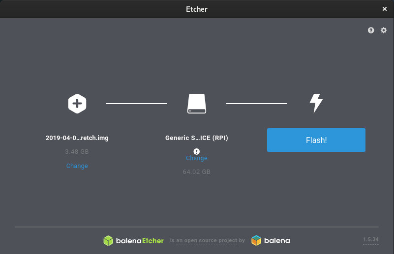

如何在 Raspberry Pi 上安装 Raspbian
Raspberry Pi 是有史以来最受欢迎的单板计算机。它可用于各种用途，如台式 PC，家庭媒体中心，智能 WiFi 路由器，自动化系统和游戏服务器。他的应用场景太多了。
如果您的 Raspberry Pi 没有通过 NOOBS 预先加载的 SD 卡，则需要在 SD 卡上手动安装操作系统。您可以在 Raspberry Pi 上运行许多不同的操作系统，包括各种 Linux 发行版，Windows 10 IoT 和 FreeBSD。
Raspberry 是 Raspberry Pi Foundation 推荐的操作系统。它基于 Debian，专为 Raspberry Pi 板而构建。Raspbian 预装了大量用于开发，教育和多媒体的软件，使其成为 Raspberry Pi 用户的最佳通用操作系统。
安装 Raspbian 就像将操作系统映像文件写入 SD 卡一样简单。在本教程中，我们将向您展示如何格式化 SD 卡，刷新 Raspbian 镜像以及启动 Raspberry Pi。
下载 Raspbian OS
访问 Raspbian 下载页面，您可以在其中找到以下链接：
- Raspbian Stretch 与桌面和推荐的软件
- Raspbian Stretch 与桌面
- Raspbian Stretch Lite
如果您想将 Raspberry Pi 用作台式 PC，请下载一个 Raspbian 桌面映像。否则，如果您打算将 Raspberry Pi 用作媒体中心或其他不需要 GUI 的内容，请下载 Raspbian Lite 镜像。
准备 SD 卡
在首先将镜像闪存到 micro SD 卡之前，需要将其格式化为 FAT32 文件系统。
Raspberry Pi 的引导加载程序仅支持从 FAT 文件系统读取。如果您的 SD 卡是 64GB 或更大，请确保它格式化为 FAT32 而不是 exFAT。
请注意，格式化是一个破坏性的过程，它将擦除所有现有数据。如果 SD 卡上有数据，请先备份。
Windows
Windows 用户可以使用标准磁盘管理格式化卡。
- 将 SD 卡插入 Windows SD 卡驱动器。
- 在 Windows 搜索框中键入“磁盘”，然后从结果框中选择“创建和格式化硬盘分区”。
- 右键单击卡的未分配空间，然后单击“新建简单卷”启动向导。点击下一步”。
- 接下来，将询问您的卷大小。保留默认的最大磁盘空间。点击下一步”。
- 系统将提示您指定装载路径，只需单击“下一步”。
- 在下一个窗口中，选择 FAT32 作为文件系统。单击“下一步”，然后单击“完成”以完成分区的创建。如果卡是 64GB 或更大，则 FAT32 选项将不可用。选择 exFAT 并完成该过程。要将 SD 卡格式化为 FAT32，请访问FAT32 格式页面，您可以通过单击图片下载该工具。
guiformat.exe将下载名为的单个文件。只需双击 exe 文件，选择要格式化的驱动器，然后单击“开始”。该卡将在几秒钟内格式化为 FAT32。
Linux
在 Linux 中，您可以使用图形工具作为 GParted 或命令行工具（如 fdisk 或 parted）来创建分区并格式化驱动器。
- 将 SD 卡插入 Linux SD 卡驱动器。
使用以下
lsblk命令找出 SD 卡的名称：lsblkNAME MAJ:MIN RM SIZE RO TYPE MOUNTPOINT ... sdb 8:16 1 59.6G 0 disk ...在这种情况下，SD设备的名称是，
/dev/sdb但这可能会因您的系统而异。识别名称的最佳方法是检查设备的大小。下一步是使用 parted 格式化卡片：
sudo parted /dev/sdb --script -- mklabel msdossudo parted /dev/sdb --script -- mkpart primary fat32 1MiB 100%将分区格式化为 FAT32：
sudo mkfs.fat -F32 /dev/sdb1
Mac OS
macOS 用户可以使用标准的“磁盘工具”或命令行格式化 SD 卡。
- 将 SD 卡插入 macOS SD 卡驱动器。
在终端窗口中键入以下命令以标识 SD 卡名称：
sudo diskutil list执行以下命令，将 SD 卡格式化为 FAT32：
sudo diskutil eraseDisk FAT32 RPI MBRFormat /dev/disk2确保使用正确的驱动器。
写镜像
有几种不同的应用程序可供免费使用，它们允许您将 ISO 映像闪存到 SD 卡。在本教程中，我们将使用 Etcher。
Etcher 是一个免费的开源实用程序，用于将镜像闪存到 SD 卡和 USB 驱动器，并支持 Windows，macOS 和 Linux。
转到Etcher 下载页面，下载适用于您的操作系统的最新 Etcher 并安装该应用程序。
- 将 SD 卡插入 SD 卡驱动器并启动 Etcher。
单击“选择镜像”按钮，找到 Raspbian zip 文件。如果您使用 Web 浏览器下载文件，则应将其存储在用户帐户中的“下载”文件夹中。如果只有一个驱动器，Etcher 将自动选择 SD 卡。否则，如果连接了多个 SD 卡或 USB 记忆棒，请确保在闪烁镜像之前选择了正确的驱动器。
 单击“Flash”按钮，将开始刷入过程。Etcher 将在闪烁镜像时显示进度条和 ETA。此过程可能需要几分钟，具体取决于 ISO 文件的大小和卡片速度。
在 Raspbian 上，默认情况下禁用 SSH 服务器。对于无头 Raspbian 设置，您可以通过将名为 ssh 且没有任何扩展名的文件放入启动分区来启用 SSH。只需在文件管理器中打开 SD 卡即可创建文件。
就这样！您的 SD 卡上有可启动的 Raspbian OS。
设置 Raspbian
将 SD 卡放入 Raspberry Pi 板，插入显示器，键盘和电源，即可开始使用。
默认用户名是pi，密码是raspberry。
如果您启用了 SSH并且想要将 Raspberry Pi 用作无头服务器，请使用网络电缆将该板与路由器连接。一旦启动，您可以在路由器的 DHCP 租约表中找到板 IP 地址，并通过 ssh 登录到 Raspbian：
pi@192.168.1.149要开始配置 Pi，请使用该 raspi-config 工具：
sudo raspi-config从这里您可以更改 pi 用户密码，设置 WiFi 并展开文件系统。
结论
在 Raspberry Pi 上安装 Raspbian 是一个非常简单的过程。基本上，您需要做的就是将镜像写入 SD 卡并启动 Raspberry Pi。